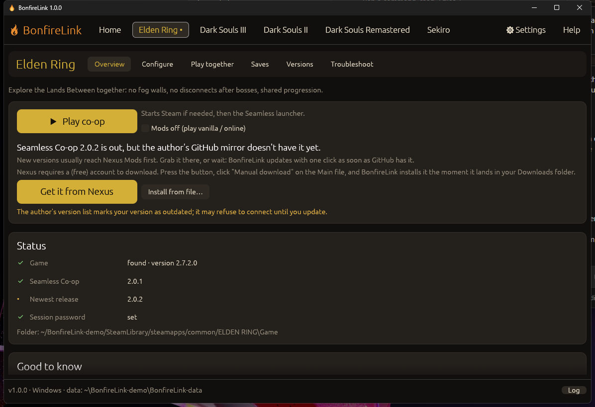
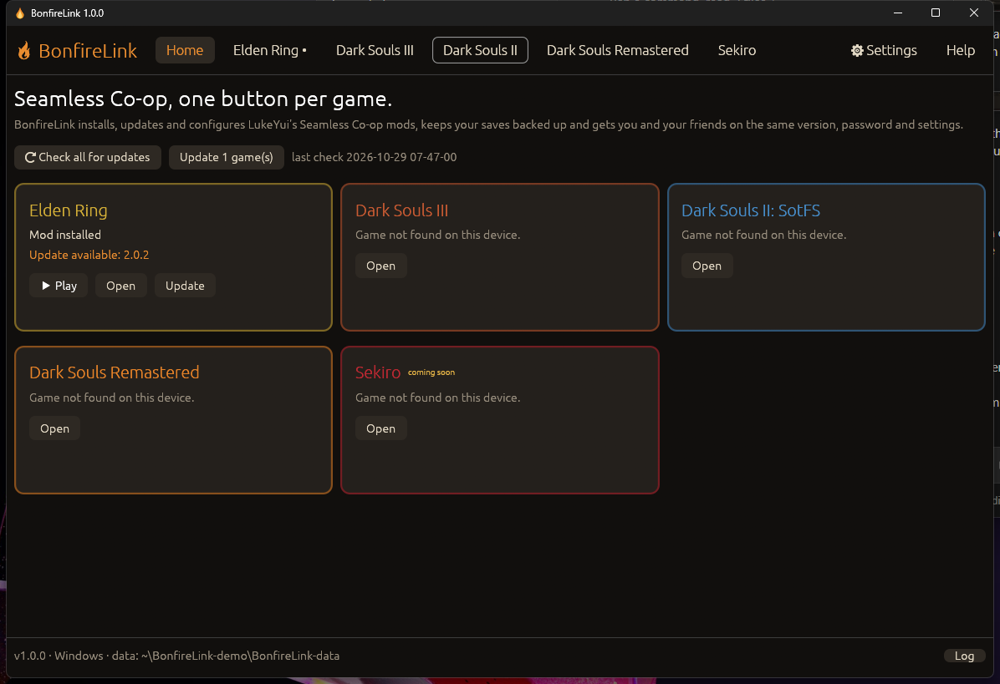

Seamless Co-op, one button per game.
Install, update, configure and share LukeYui's Seamless Co-op mods. Built for Windows and the Steam Deck, as a single portable app.

Every game gets its own tab with Overview, Configure, Play together, Saves, Versions and Troubleshoot.
Checks the author's releases every start. GitHub builds install in one click, checksum verified. Nexus-only builds install themselves the moment the download lands.
Open your API-key page from the app, paste the key, done. Premium: fully automatic. Free: one click on Nexus's "Mod Manager Download" installs the file.
Toggles, sliders and dropdowns read straight from the mod's ini, so new options appear automatically. Raw editor included.
Relaxed story, Balanced, Veteran, Nightmare, No scaling, PvP night, Streamer, or save your own.
Share one code. Friends paste it and instantly see whether version, patch, password and settings match, then fix it in one click.
Backups before every change, restore with undo, a second backup folder, and one-click vanilla ⇄ co-op save copy.
Every update keeps the version it replaced. Install any older release or roll back with your settings intact.
After a one-time setup, Steam's Play button (also in Gaming Mode) updates the mod and starts co-op under Proton.
Diagnostics, conflict detection, patch alerts, fixes for common problems, and a bug report zip with your password removed.
One file. Everything it keeps lives next to it in BonfireLink-data. It updates itself.
Three clicks from download to co-op.
BonfireLink-windows-x64.exe in its own folder and start it. Steam libraries are found automatically.Open Konsole in Desktop Mode and paste:
curl -fsSL https://github.com/clawdroppin/BonfireLink/releases/latest/download/install-steamdeck.sh | bash
Prefer manual? Download BonfireLink-SteamDeck.tar.gz, extract and double-click BonfireLink.

| Game | Where the mod comes from | Install |
|---|---|---|
| Elden Ring | Author's GitHub releases + Nexus | One click |
| Dark Souls III | Nexus Mods | One click with a Nexus Premium key, otherwise Get it from Nexus (auto-installs the download) |
| Dark Souls II: SotFS | Author's GitHub releases + Nexus | One click |
| Dark Souls Remastered | Nexus Mods | One click with a Nexus Premium key, otherwise Get it from Nexus |
| Sekiro | Announced, not released | BonfireLink offers it the day it ships |
No. BonfireLink is an unofficial fan tool. The mods are made by LukeYui (Yui); BonfireLink only downloads them from the official GitHub releases or Nexus Mods and never changes the mod files. Please support the author.
Only when you ask (restore or vanilla ⇄ co-op copy), and it always makes a backup first. Seamless Co-op itself uses a separate save file, so your vanilla character is safe.
On Windows, no. On Steam Deck it adds its launch wrapper to each modded game's launch options (your own options are kept) and can add itself as a non-Steam shortcut. Uninstall removes the launch option again.
Seamless Co-op runs on its own servers with the game's anti-cheat off, separate from official matchmaking. Use Mods off for official online play, and don't take items into vanilla online that the official game wouldn't allow.